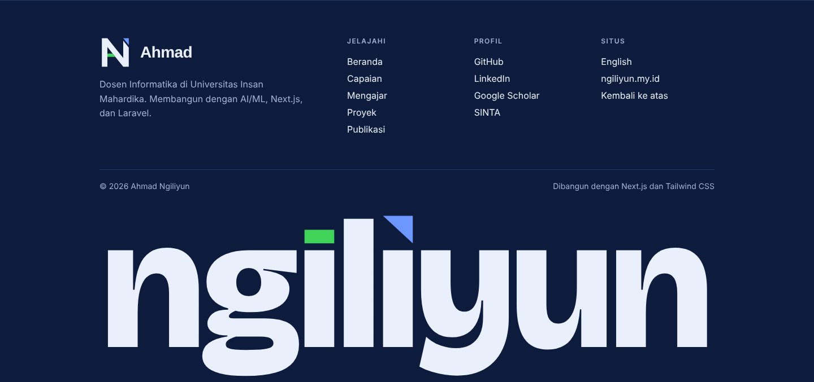
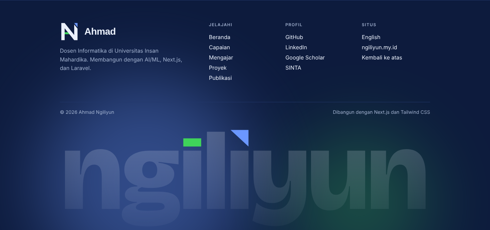
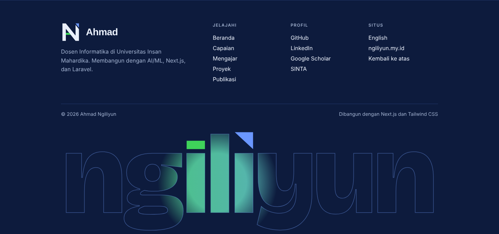

A. Satu Jalur
N ditulis sebagai satu goresan. Ujung awal (kiri bawah) biru, ujung akhir (kanan atas) hijau, keduanya dipotong sejajar diagonal. Paling dekat dengan opsi 2 lama, tetapi tanpa huruf A.
Turunan dari opsi 2 (N solid) yang Mas Ilyun pilih, dikerjakan dengan cara yang sama seperti logo NetA: satu konsep yang bisa dijelaskan, bentuk geometris tegas, tanpa gradasi, dan tetap terbaca di 16 px. Rasional lengkap ada di IDENTITAS_LOGO_v2.md.
Dari jauh ini huruf N yang solid. Lihat bagian kirinya: batang kiri, diagonal, dan satu palang hijau membentuk huruf A. Jadi inisial Ahmad tersimpan di dalam Ngiliyun, dan maknanya baru terasa setelah mata menyelesaikan bentuknya.
Ujung kanan atas dipisah oleh celah sejajar diagonal dan diberi warna biru: akhir goresan yang naik. Hijau menandai A dan biru menandai N, sama dengan aturan palet situs saat ini ("A hijau, N biru").
Yang membuat opsi 2 lama terasa kurang adalah dua segitiga sudutnya hanya hiasan. Di versi ini setiap warna punya tugas.
Batang kiri, diagonal, dan palang hijau.
Grid 512, batang 56, kemiringan diagonal 5:4.
Celah memotong sejajar diagonal, satu sudut untuk seluruh logo.
Versi latar terang: badan navy, hijau dan biru digelapkan agar kontrasnya cukup.
Wordmark memakai Bricolage Grotesque ExtraBold, huruf display yang sudah dipakai situs, jadi wordmark dan judul halaman satu keluarga. Dua titik huruf i diganti elemen dari logo: titik pertama menjadi palang hijau (A), titik kedua menjadi ujung biru (N). Teks sudah diubah menjadi bentuk, tidak bergantung font.
Tiga varian, semuanya mengikuti pola Laravel dan Dicoding: wordmark selebar kontainer, terpotong di dasar halaman. Buka footer.html untuk mencoba langsung (ada tombol pilih varian; varian 3 mengikuti kursor dan diam bila pengguna memilih kurangi gerakan).



Ditampilkan supaya Mas Ilyun bisa membandingkan. Saya tidak merekomendasikannya dengan alasan masing-masing.
N ditulis sebagai satu goresan. Ujung awal (kiri bawah) biru, ujung akhir (kanan atas) hijau, keduanya dipotong sejajar diagonal. Paling dekat dengan opsi 2 lama, tetapi tanpa huruf A.
A dan N digabung dalam tiga goresan: kaki kanan A sekaligus diagonal N. Catatan jujur: sekilas terbaca "AI". Bisa jadi nilai tambah untuk AI engineer, tetapi juga berisiko terlihat seperti logo AI generik.
N sebagai ruang negatif di antara bidang biru dan hijau; garis bagi warna meneruskan diagonal N. Paling terbaca di 16 px, tetapi memakai prinsip yang sama dengan logo NetA, jadi identitas pribadi dan NetA bisa tertukar.